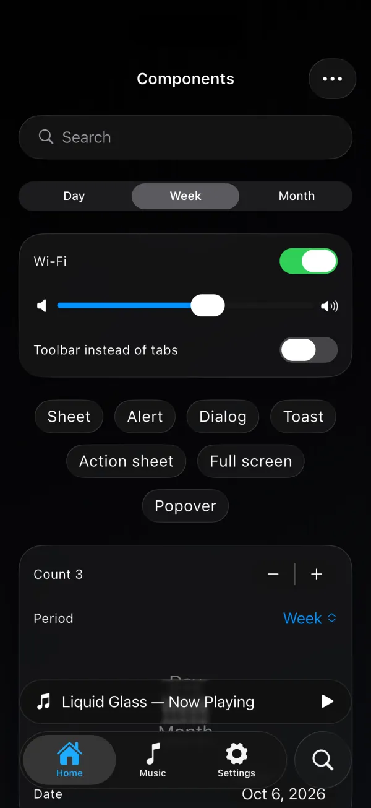
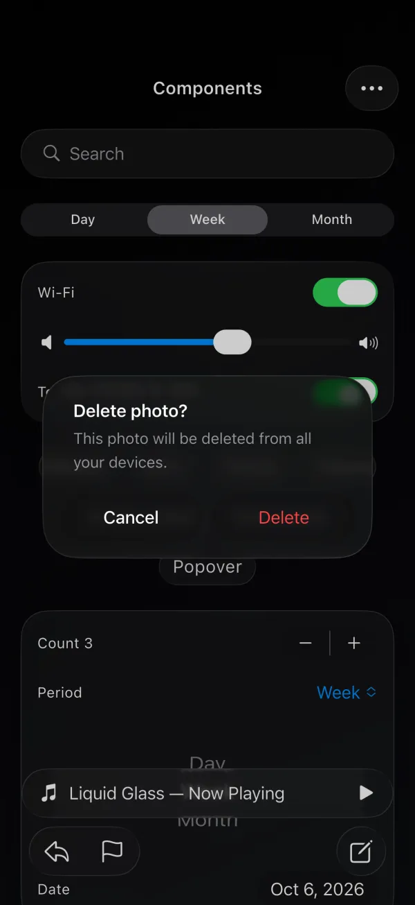
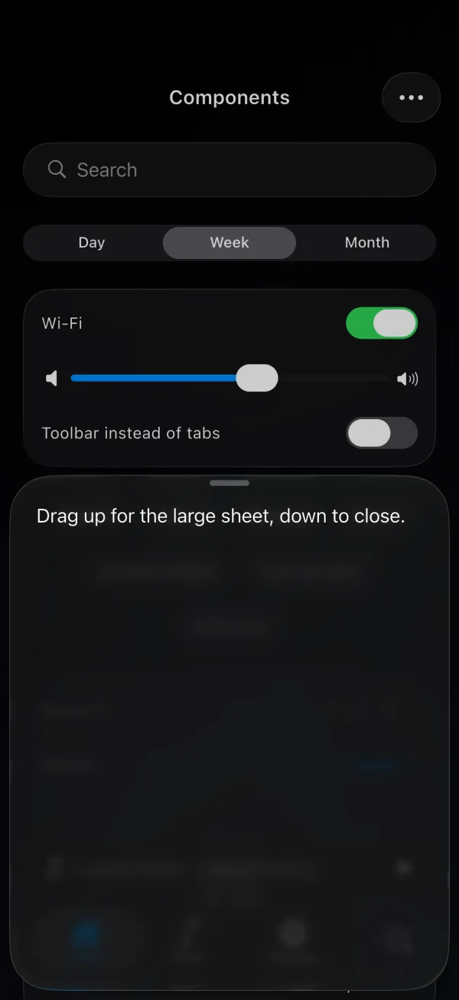
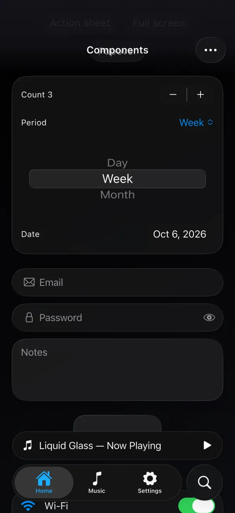
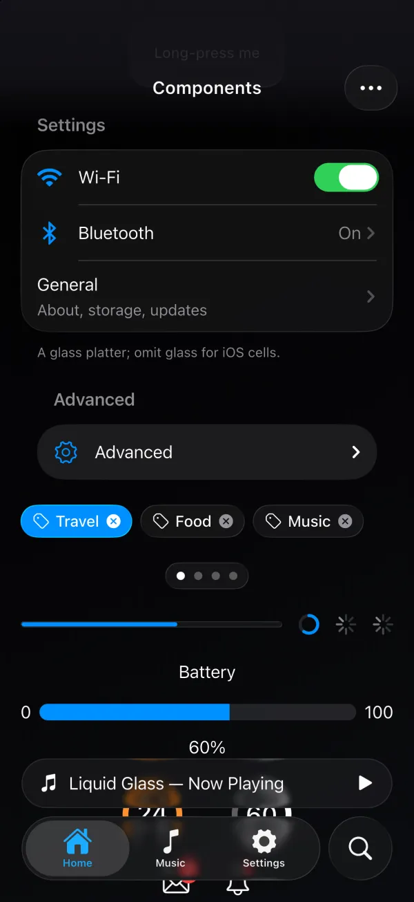
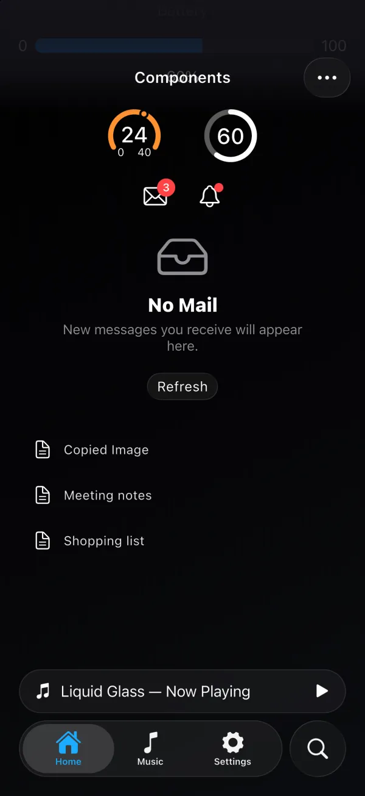

iOS 26 Liquid Glass for Flutter, measured against SwiftUI.
adaptive_liquid_glass gives a Flutter app Apple’s Liquid Glass on iOS 26, a shader that matches it on older iOS, and a Material 3 surface on Android, all behind one API. App code never branches on platform. I designed and built it on my own, from the Swift plugin and the fragment shaders to the pipeline that proves the result against SwiftUI pixel by pixel.



The problem
iOS 26 made Liquid Glass the look of the platform, and Flutter had nothing for it. Teams either wrote a blur that looked roughly right, or branched the app into a Cupertino tree and a Material tree. Neither path had a way to answer the question that matters: does it actually look like SwiftUI?
I wanted one widget tree, the real thing on the platform that has it, a faithful fallback where it doesn’t, and numbers instead of opinions.
What I built
- Three renderers, one API. On iOS 26 the glass is SwiftUI’s own
glassEffect, hosted through a Swift plugin, so it is pixel-identical to a SwiftUI app. On older iOS a fragment shader reproduces it. On Android the same widgets draw a Material 3 surface with colours from your theme and an ink ripple on press. No glass code runs there. - A SwiftUI-shaped API.
Text('Hello').glassEffect()mirrors SwiftUI’s modifier.Glass.regular,clear,tintedandinteractivechain the way they do in Swift.GlassGroupisGlassEffectContainer: members share one backdrop sample and morph into each other. - 40+ components. Buttons, segmented controls, toggles, sliders, steppers, text fields, search, chips, badges, lists and swipe rows, disclosures, menus, context menus, popovers, action sheets, dialogs, sheets with detents, full-screen covers, toolbars, tab bars with the iOS 26 lens, navigation and scroll-edge effects, page controls, progress, gauges, wheel and date pickers, a colour picker, toasts, pull-to-refresh and an empty state.
- Measured motion. Press, release and morph use springs fitted from SwiftUI recordings, and the full-screen cover’s slide is fitted from a screen recording to within 0.6% of the screen height.
- Readable by default. Text and icons on glass get a vibrant, legible colour like SwiftUI’s labels; colours you set yourself still win. Interactive glass gets button semantics, focus, and Enter and Space.
- RTL-safe. Directional insets throughout, while the light angle is not mirrored, which is what iOS does.



Proving fidelity
The shader is only useful if it matches. I built a fidelity pipeline that renders 75 scenes twice, once in a SwiftUI reference app and once in Flutter, on the same simulator (iPhone 17 Pro, iOS 26.4), then scores each pair with SSIM and CIEDE2000 colour difference. The scenes cover regular, clear and tinted glass; capsules, circles and rounded rectangles; photo, text and gradient backgrounds; light and dark mode; and merged groups.
The native path scores 75 of 75 at parity (minimum SSIM 0.9996, maximum ΔE 0.05). The shader scores a median SSIM of 0.983 and a median ΔE of 1.29, with no scene below SSIM 0.95 and 55 of 75 passing the strict bars (SSIM ≥ 0.97, ΔE ≤ 2.0). Every constant in the shader was tuned against these numbers, not by eye, and the per-scene record is checked into the repository so a regression shows up as a changed number.
Engineering notes
- Swift plugin. The iOS 26 path hosts real SwiftUI glass views inside the Flutter view hierarchy and keeps their shapes, tints and interactive state in sync with the Dart widgets, including groups that morph.
- Fragment shaders. Three GLSL shaders: the glass itself, a progressive blur for scroll edges, and the tab-bar lens. They load before the first frame through an optional
initialize()and fall back to a plain blur for a frame or two if you skip it. - Measured, not guessed. Component positions, insets and colours were taken from SwiftUI with a ruler and a pixel picker, and the changelog records each correction with the measured error.
- Tests. 700+ widget and unit tests, plus an example app with a scripted tour used for the pub.dev gallery and the demo video.
Outcome
A Flutter app can adopt Liquid Glass in one line and look right on every iPhone and every Android phone, with proof. The package is published on pub.dev with a dev-channel release train, documented end to end, and open source under MIT.
Try it
View on pub.dev ↗Source on GitHub ↗
Add adaptive_liquid_glass to your pubspec.yaml and wrap any widget with .glassEffect(). No theme, no initialisation call, no platform checks. The demo video on LinkedIn ↗ walks through the components on a real device.